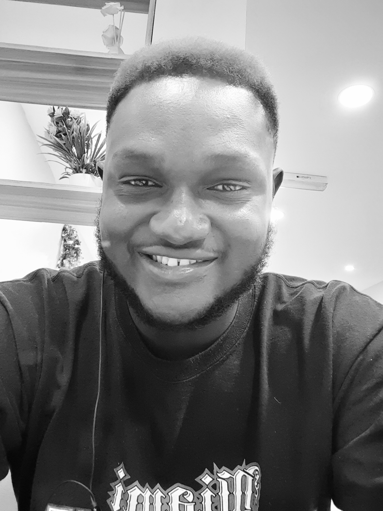

About Me
Hello, I'm Dr. Eriamiatoe Efe, a Dental Surgeon based in Benin City. I completed my education at the University of Benin College of Medical Sciences, where I honed my skills and passion for healthcare.
Outside the realm of dentistry, I'm an ardent football enthusiast and a dedicated gamer. These hobbies provide a perfect balance to my academic and professional life, allowing me to unwind and stay sharp.
My research interests encompass the fascinating domains of cancer research, immunology, infection control, nutrition, pathology, and health education. I'm deeply committed to advancing our understanding of these fields and improving public health outcomes through education.
Welcome to my personal website, where I'll be sharing my insights, experiences, and ongoing projects in these areas. Join me on this journey of discovery and progress!